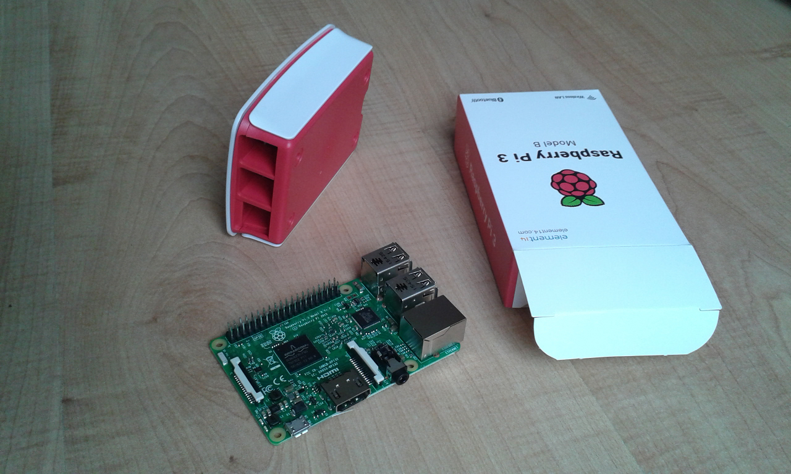
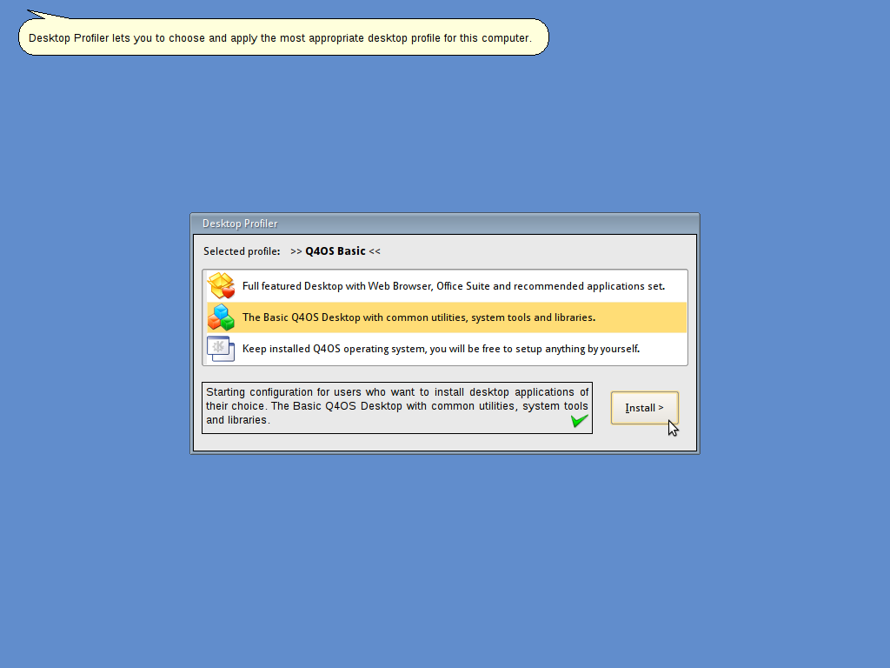
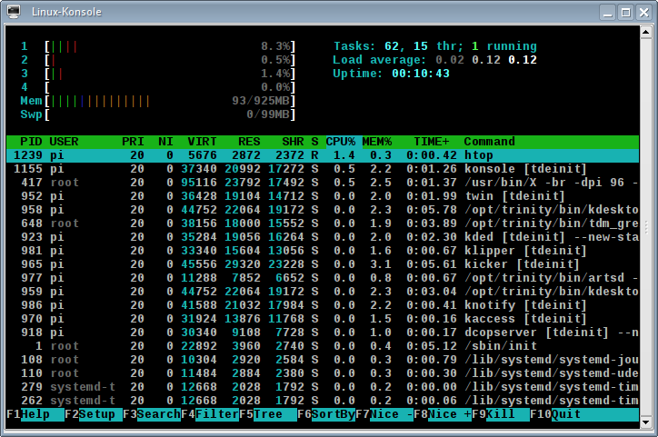
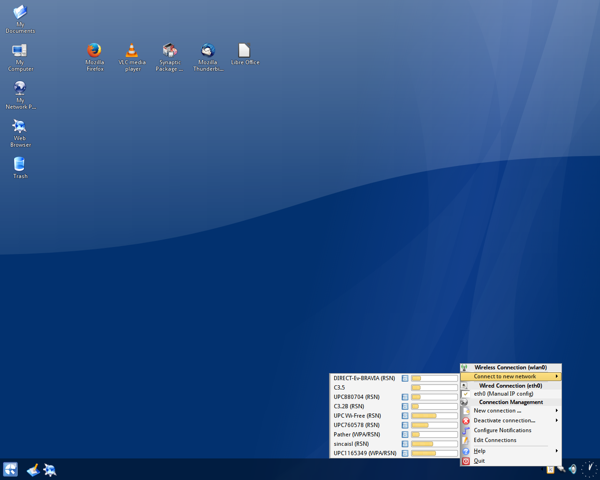
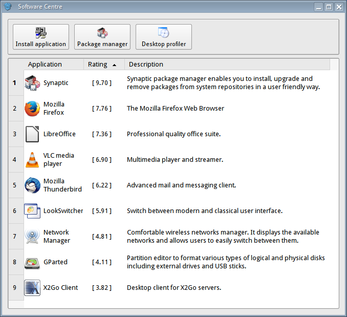
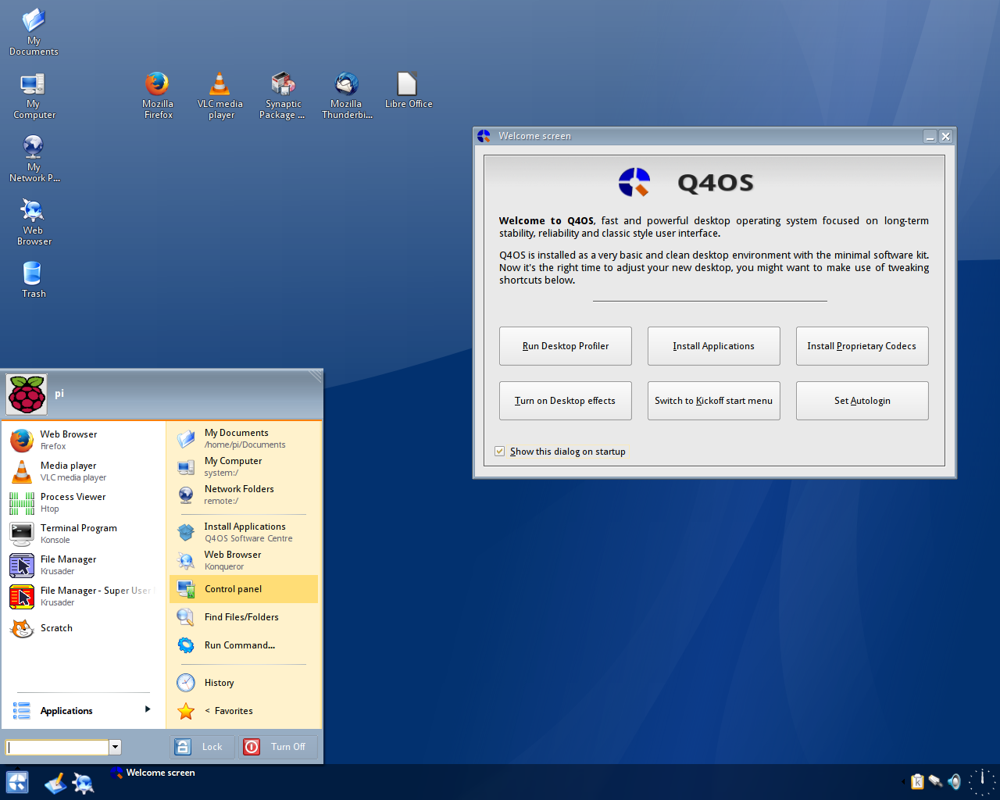

The real Desktop on Raspberry Pi
The real Desktop on Raspberry Pi
29 April, 2016Time for ARM Desktop ?
Is finally the right time of the affordable Desktop on ARM architecture ? There is a new Raspberry Pi-3 board at $35, which comes with 1.2GHz 64-bit quad-core ARM Cortex-A53 CPU, Wireless LAN and Bluetooth devices integrated, released by the Raspberry Pi foundation several weeks ago. I have tested the Pi-3 with the most recent version 1.4.9.2 of the Q4OS operating system, which features Raspberry Pi desktop eddition. Q4OS for Raspberry Pi is based on Raspbian distro and is optimized for the desktop application. One can easily setup a tiny workstation with well known desktop applications like Firefox, LibreOffice, Thunderbird and so on. The Raspbian repository with its huge software base is accessible via Synaptic package manager.

Preparing
First, I have loaded bootable Kingston 32GB micro SDHC Card with Q4OS 1.4.9.2 operating system, following installation instructions. As finished, Raspberry Pi enclosed in the case and attached with network ethernet cable, I eagerly plugged USB power on and waited for boot. All went well, and the login screen has appeared in a few seconds, wov Raspberry Pi-3 is really fast ! Login as 'Pi' user with password 'raspberry', feeling the Raspbian distro under the hood. The first login procedure included 'change password' prompt, language selection and resizing the basic partition to fill entire space of the SD card. The last question bids user to select 'Desktop profile' - predefined set of applications to install.
I have selected the 'Basic' desktop profile as a starting point, it says:
"Starting configuration for users who want to install desktop applications of their choice. The Basic Q4OS Desktop with common utilities, system tools and libraries."
Downloading about 180MB of software and installing the profile has taken about 20 minutes.

First impressions
Once the Basic profile has been applied, Q4OS desktop comes being opened with Welcome dialog in the middle of the screen. I noticed the speed and responsivity on the first touch, very pleasant experience. I was mostly curious about RAM usage, so I have ran 'htop' taskmanager in terminal. The outcome has been amazing, 'htop' reports just 93MB of RAM utilized ! Well, what about disk space ? Command 'df -h' shows 1.7GB disk space occupied, not bad for the full desktop installed, isn't it ?
Another interesting feature worth noting is the default double panel Start menu named 'Bourbon'. It is quite intuitive, convenient and, as far as I know, very different from other comparable menus from other Linux distributions.

Setup
Connecting to the Wifi network is a fairly standard affair. I have clicked on the network icon in the system tray and select the network. Users will need to enter a password in the connection wizard, if the WiFi network requires one. The next step is to configure Raspberry Pi with terminal command 'sudo raspi-config', I have set timezone and tried to enable experimental OpenGL hardware acceleration driver. Unfortunately, the OpenGL hardware acceleration doesn't work properly so far. According to post-install recommendations in Q4OS installation instructions, I have proceeded terminal commands 'sudo apt update && sudo apt dist-upgrade' for system to be updated. Finally, I have entered Q4OS Software Centre from the Start menu and install Synaptic package manager and other desired desktop applications.


Summary
Raspberry Pi-3 is really fast, Q4OS desktop is highly responsive within, and the performance is astounding. There were no crashes and all worked reliably, as expected. It is really getting closer to the true Desktop experience and the system seems to be very useful and intuitive. The bluetooth device is functional, but unfortunately it's not available out of the box, needs to be configured via command line tool 'bluetoothctl' or 'blueman' package has to be installed and configured. The Firefox package is in version 38, based on the Iceweasel from Raspbian repositories, hopefully Q4OS devs will update it to be more recent in the future. So, is finally the right time of the Desktop on ARM architecture ? Despite some small flaws, we can daringly say, Yes it is !

Components used
{kind=link}
{kind=link}
{kind=link}
{kind=link}
{kind=link}
{kind=link}
- Raspberry Pi-3 model B
- Kingston Micro SDHC 32GB, class 10UHS-I
- Raspberry Pi Case, mod-B